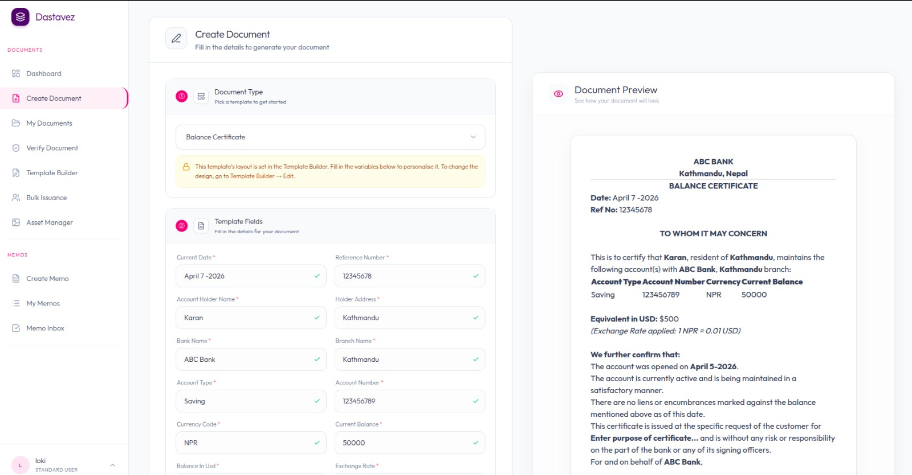

Document Creation
Standardize how documents are drafted within your organization.
Dastavez helps organizations create and validate documents using Delegation of Authority-based workflows, ensuring that every document meets the highest standard of validation.

Ad-hoc document creation and validation often bypass critical organizational controls. Dastavez introduces a structured, approval-driven approach to every document being issued or released.
Standardize how documents are drafted within your organization.
Move documents through multiple layers of validation automatically.
Adhere strictly to Delegation of Authority with permission-based routing.
Send documents to the right stakeholders at the right time based on predefined rules.
Lock down editing and manage document versions throughout the validation journey.
Control exactly when and how a document is officially released to its intended audience.
Ensuring every organizational document is accurate and compliant.
Prevent documents from being issued without the required validations.
Automated validation ensures critical data is present before final release.
Every finalized document is a trusted record with a visible approval history.